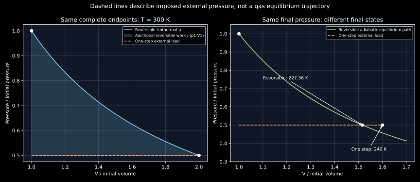

7. The first law, reversible paths and adiabatic processes
After a gas expands against a suddenly reduced load, replacing the original load need not restore its original state. Pressure can return while temperature and volume do not. That observation separates three ideas often compressed into a piston sketch: conservation of energy, the path-dependent work delivered to the surroundings, and the stronger requirement that a process can be reversed without leaving a trace.
The complete local transcripts of lessons 13–14 were read sequentially. They develop the first law, reversible versus finite-step piston motion, work areas, inexact differentials, isothermal and adiabatic paths, and the distinction between system and surroundings. The numerical paths here are original calculations with explicitly stated ideal-gas and boundary models. External-load rectangles are not presented as measured intermediate equilibrium pressures inside a rapidly moving gas. The harmonic-quench extension is separately derived from a primary nonequilibrium-work result.
7.1 Conservation is necessary; it does not determine direction L13 · 00:52
Choose a closed system and count heat into it as positive, $Q>0$. Count work delivered by it to its surroundings as positive, $W_{\rm by}>0$. Neglect changes in the kinetic and gravitational potential energy of the system as a whole. The first law then reads
Other sign conventions are possible, but they must be translated consistently. With work done on the system, $W_{\rm on}=-W_{\rm by}$, the same law is $\Delta U=Q+W_{\rm on}$. If the piston retains significant kinetic energy or the system changes altitude, those energy changes must be included rather than silently folded into $U$.
For a complete reversal between the same two states, $\Delta U$ changes sign along with the exchanged energy quantities. One should not reverse the signs of $Q$ and $W$ while leaving the state-function change unchanged. The first law by itself cannot distinguish a spontaneous process from its mathematically energy-balanced reverse. It is a necessary accounting constraint, not a statement that every energy-conserving proposal is feasible.
For instance, a hypothetical transfer of energy from a colder body to a hotter one without compensation can conserve total energy. The second law supplies an additional restriction. Conversely, ordinary compression can occur if a load drives it; the word “reverse” does not automatically make a process impossible. Direction must be assessed for a specified system, surroundings and allowed changes. The engine and entropy chapters will formalize the restrictions that the first law leaves open.
Along any cycle returning the system to the same complete state, $\Delta U=0$, so $Q_{\rm cycle}=W_{{\rm by},\rm cycle}$. Neither integral must individually vanish. A heat engine can have nonzero cyclic work and heat exchanges while its working substance has zero net internal-energy change. Reversibility is a separate property from being cyclic.
7.2 Reversibility requires the surroundings to be recoverable too L13 · 09:28
An ideal reversible process can be retraced with the system and all relevant surroundings restored, apart from infinitesimal limiting adjustments. Removing an infinitesimal load from a frictionless piston can cause a correspondingly small expansion; an infinitesimal opposite adjustment can reverse that step. A finite pressure imbalance drives motion that cannot generally be undone by one infinitesimal reversal of the load.
A quasistatic path passes through states sufficiently close to internal equilibrium that equilibrium variables can describe the system along it. This condition is useful, but it does not eliminate every source of irreversibility. A piston can move slowly against friction, and a body can remain almost internally uniform while receiving heat through a finite temperature difference. Both can be quasistatic from the system's viewpoint while dissipating energy or producing entropy in the larger experiment. The distinction is explicitly discussed in MIT 10.40 supplemental notes, pp.1–3.
Reversible paths therefore require appropriate mechanical and thermal matching as well as absence of dissipative effects. A finite-speed motion is not automatically irreversible merely because a velocity exists, and a slow motion is not automatically reversible merely because it is slow. In the elementary piston limit, reducing pressure imbalances and allowing internal equilibration makes the reversible idealization accessible as a limit. The model should state what losses are being removed in taking that limit.
The lecture's falling-ball analogy illustrates conversion of organized mechanical energy into internal energy of the ball, floor and surroundings. Within an adiabatically closed larger system, such conversion does not constitute heat crossing its outer boundary. “Dissipation heats the system” can be a useful informal phrase, but adding a positive $Q$ to an adiabatic balance would count the wrong transfer channel. Energy is redistributed internally; it has not been created or destroyed.
7.3 A work rectangle describes the imposed load L13 · 17:33
For the simple piston model, work delivered against an effective external pressure is $W_{\rm by}=\int p_{\rm ext}\,dV$. Suppose the resisting load is suddenly changed to a constant $p_2$ and the gas eventually reaches volume $V_2$ from $V_1$. If this is the only delivered work channel and the boundary model applies throughout the displacement, then
The area of this rectangle is the integral of the imposed external pressure. During the rapid transient, the gas may have pressure gradients, internal motion and a moving piston. A vertical line from initial system pressure $p_1$ to $p_2$ followed by a horizontal rectangle is therefore a bookkeeping representation of the changed load, not a claim that all intermediate gas states lie on that equilibrium path.
For an internally equilibrated, frictionless, mechanically reversible path, the external pressure approaches the system pressure, giving $W_{{\rm by},\rm rev}=\int p\,dV$. The equation of state can then supply $p$ along the equilibrium path once the thermal condition is also specified. Knowing only the initial and final ideal-gas states does not identify the external load history or determine the work of an arbitrary irreversible route.
We will use models with a gas that ultimately equilibrates under each specified load and with initial and final piston kinetic energies negligible. Any damping of transients and any associated energy return must be consistent with the chosen boundary. If appreciable energy is deposited in piston hardware outside the gas, a gas-only balance needs that extra exchange. The simple numerical examples below specify the conventional closed-gas pressure-work model; they are not a detailed mechanical simulation of a particular cylinder.
7.4 Compare two paths with identical isothermal endpoints L14 · 01:16
Take one mole of a classical monatomic ideal gas, initially at $T_1=300$ K and $p_1=100$ kPa. Its initial volume is $V_1=RT_1/p_1$. Compare two expansions ending in a fully equilibrated state at the same temperature and twice the volume: $T_2=T_1$, $V_2=2V_1$, $p_2=p_1/2$. The caloric model is $U=3nRT/2$ plus a fixed reference, so both paths have $\Delta U=0$.
The reversible isothermal path follows $p=nRT_1/V$, giving
For the one-step route, change the external load to $p_2=p_1/2$ and allow equilibration with a 300 K reservoir. Equation (7.2) gives
The first law gives $Q=W_{\rm by}$ in both cases, but the two heat inputs differ by $481.774503$ J. Thus heat and work are path dependent even when the complete endpoints and $\Delta U$ are identical. No assumption that heat is a stored state property was needed to make the comparison.
The one-step gas need not have a single temperature equal to 300 K at every instant of its transient. What is fixed here is the reservoir and the equilibrated endpoints. Calling the whole irreversible path “isothermal” requires an additional thermal-control idealization. The endpoint calculation remains valid without drawing an unobserved sequence of homogeneous gas states. In contrast, the reversible isotherm explicitly specifies an equilibrium temperature throughout.
Expand in $N_s$ equilibrated load steps with equally spaced volumes $V_i=V_1(1+i/N_s)$. Each increment acts against its final load $p_i=nRT_1/V_i$. Its delivered work is the right-endpoint sum
Because $1/V$ decreases, every right rectangle lies below the isotherm. The sequence can also be written $W_{N_s}/(nRT_1)=N_s^{-1}\sum_{i=1}^{N_s}(1+i/N_s)^{-1}$ and converges to the integral. For 2, 10 and 100 steps, the executed sums give $1455.030958$, $1668.142450$ and $1722.723639$ J. These values show the approach; the Riemann-sum argument establishes the limiting result. The code checks these particular refinements rather than pretending that three numbers prove a universal convergence theorem.
Under the specified common endpoints, one reservoir and pressure-work model, the reversible expansion delivers more work than these finite-step routes. A universal phrase such as “reversible work is always larger” would need qualifications about sign, allowed heat exchange, endpoints and useful work. Compression work done on the gas has the opposite optimization direction. Exergy additionally requires a reference environment and a definition of the useful work being counted; it is not the name of an unrestricted $\int p\,dV$ maximum.
7.5 A return cycle can leave a permanent change outside L14 · 08:13
Return the one-step-expanded gas from $2V_1$ to $V_1$ by applying the original constant external pressure $p_1$, again allowing equilibration at 300 K. Its work delivered by the gas is negative:
The gas returns to its initial state, but the total cycle work is $-1247.169393$ J and its net heat input is the same negative number. External work has been supplied, and net energy has been rejected to the reservoir. Restoring the gas has not restored the work store and reservoir to their initial states. This is a concrete irreversible return cycle.
Reversing the reversible isothermal path instead gives exactly the negative of (7.3), with correspondingly reversed heat. That retracing leaves no net work or heat exchange over the out-and-back pair. This does not mean every reversible cycle has zero net work: a reversible engine cycle follows several distinct paths and can exchange heat with different reservoirs. “Retracing one path backward” is a specific cycle, not the definition of all cycles.
7.6 Inexact differentials encode the path dependence L14 · 06:56
For reversible pressure work in the fixed-amount ideal-gas state plane $(T,V)$, the heat form is
Here $C_{V,m}=3R/2$ is constant for our model. If this were $dF$ for a smooth state function $F(T,V)$, its coefficient derivatives would need to agree: $\partial_V(nC_{V,m})=\partial_T(nRT/V)$. The left side is zero and the right side is $nR/V$, so the test fails. In the domain $T,V>0$, it is not an exact state-function differential. A definite integral along a specified path is perfectly meaningful; it simply cannot be found by subtracting endpoint values of a universal “heat content.”
Dividing by temperature changes the mathematical structure:
The reference $T_*,V_*>0$ makes logarithms dimensionless. For this gas, $1/T$ is an integrating factor for the reversible heat form. The bracket differs from entropy only by a constant, as the next chapter explains. This identity is not permission to integrate $\delta Q/T$ along an arbitrary irreversible process and call the result its entropy change. The reversible qualifier is part of the construction.
7.7 An adiabatic boundary does not imply a constant temperature L14 · 10:45
Adiabatic means no heat crosses the chosen boundary: $Q=0$. It does not mean that work is zero, temperature is constant, or the process is reversible. For a mechanically reversible closed ideal-gas expansion with constant $C_{V,m}$ and only pressure–volume work, (7.1) gives
Integrating yields $T V^{R/C_{V,m}}=\text{constant}$ along a fixed-unit representation, or more cleanly the dimensionless endpoint relation $T_2/T_1=(V_1/V_2)^{R/C_{V,m}}$. Define $\gamma=C_{p,m}/C_{V,m}$, with $C_{p,m}-C_{V,m}=R$. Then $R/C_{V,m}=\gamma-1$, and the equivalent familiar relations are
The last constant is dimensionful; ratios avoid taking logarithms of dimensionful quantities during the derivation. For a monatomic classical gas $\gamma=5/3$. If capacities vary with temperature, the integral of $C_{V,m}(T)/T$ replaces the constant-capacity logarithm, and one should not insert a universal constant $\gamma$.
Work follows either from integrating the reversible pressure curve or directly from the first law:
In expansion $T_2 Use the same initial mole at 300 K and 100 kPa, but now insulate the gas. Reduce the final external pressure to $p_2=50$ kPa. In the reversible route, (7.10) gives $T_{2,\rm rev}=227.357485$ K, $V_{2,\rm rev}/V_1=1.515717$, and $W_{{\rm by},\rm rev}=905.975213$ J. For one finite load step, set the external pressure directly to $p_2$ and use the declared closed-gas pressure-work balance, with gas and piston finally at rest and mechanical equilibrium. The final gas obeys $p_2V_{2,\rm irr}=nRT_{2,\rm irr}$, while Eliminate the final volume and write $b=p_2/p_1$. Since $p_2V_1=bnRT_1$, With $b=1/2$, the result is $T_{2,\rm irr}=240$ K, $V_{2,\rm irr}/V_1=1.6$, and $W_{{\rm by},\rm irr}=748.301636$ J. The irreversible endpoint is warmer and larger than the reversible endpoint at the same pressure. It is still colder than the initial 300 K gas. Saying that dissipation “makes it hotter” refers here to comparison with the reversible final state, not to heating above its own initial temperature. These paths do not have identical final states, so their work difference is not the common-endpoint isothermal comparison of §7.4. The difference follows from the two explicitly solved boundary problems. An arbitrary claim of a maximum over all other adiabatic routes would require specifying the admissible states, work channels and surroundings.  Apply the original 100 kPa load in one adiabatic compression step to the irreversible state. Solving the same first-law and final-state equations gives $T_3=336$ K and $V_3/V_1=1.12$. Pressure has returned to its original value, but the gas has not returned to its original state. The two steps are not a closed thermodynamic cycle. The net work done on the gas remains as an internal-energy increase. As a consistency preview, use the exact ideal-gas state function in (7.8). The first irreversible adiabatic step has $\Delta S=nC_{V,m}\ln(240/300)+nR\ln1.6=1.124849532\ \mathrm{J\,K^{-1}}>0$, although $Q=0$. This is why adiabatic is not synonymous with isentropic. The next chapter derives the entropy balance and gives this difference its general meaning. Jarzynski's original nonequilibrium-work paper starts a classical system in canonical equilibrium and repeats the same external-parameter protocol. With its work-on convention and suitable Hamiltonian/reservoir assumptions, including the stated weak-coupling condition, it relates an ensemble exponential average to the equilibrium Helmholtz free-energy difference: $\langle e^{-\beta W_{\rm on}}\rangle=e^{-\beta\Delta F}$. The paper also discusses rare-event sampling limits. An exact ensemble identity is not a promise that a few irreversible measurements accurately estimate free energy. We can verify the sudden-switch limit in an original solvable example. A classical one-dimensional particle has potential $kx^2/2$. At fixed temperature its configurational partition integral is proportional to $k^{-1/2}$; the unchanged momentum factor cancels in a ratio. Suddenly change stiffness from $k_0$ to $k_1=4k_0$. Position does not change during the switch, so the parameter work is $W_{\rm on}=(k_1-k_0)x^2/2$. With $q=x\sqrt{k_0/(k_BT)}$, the initial density is the standard normal and $\beta W_{\rm on}=3q^2/2$. The Gaussian integrals supply both results directly; the code checks them independently by quadrature. Convexity gives $e^{-\beta\langle W_{\rm on}\rangle}\leq\langle e^{-\beta W_{\rm on}}\rangle$, hence $\langle W_{\rm on}\rangle\geq\Delta F$. Work is path dependent, yet its statistics can encode a state-function difference. This example is an instantaneous smooth-potential quench with an equilibrium initial ensemble, not a hard-wall free expansion or a piston experiment. No finite-sample convergence claim or arbitrary strong-coupling extension is made. Keep one work sign. A closed system receives 600 J of heat while 250 J of work is done on it. Find $\Delta U$. What are $Q$, $W_{\rm by}$ and $\Delta U$ for a complete reversible retracing? The work delivered by the system is $W_{\rm by}=-250$ J, so $\Delta U=600-(-250)=850$ J. In the complete retracing, $Q=-600$ J, $W_{\rm by}=250$ J and $\Delta U=-850$ J. Reversing transfers but retaining the original positive internal-energy change would violate the same first law one intended to apply. Quasistatic friction. A gas piston moves arbitrarily slowly while a dry-friction force resists its displacement. Does the small velocity prove reversibility? What must be checked beyond internal gas equilibrium? No. Friction dissipates mechanical energy and the required load changes sign with motion, so an infinitesimal reversal need not retrace the system-plus-surroundings experiment. Internal uniformity permits a quasistatic description, but reversibility additionally requires no dissipative loss and appropriate matching of thermal and mechanical driving forces. One must track changes in the piston hardware, load and heat reservoirs as well as the gas state. Isothermal work for a different expansion. For one mole initially at 300 K and100 kPa, triple the volume while returning to the same temperature. Compare a reversible isotherm with one external load step to the final pressure. The final pressure is $p_1/3$. Reversible work is $RT\ln3\approx2740.311242$ J. One-step work is $(p_1/3)(3V_1-V_1)=2RT/3\approx1662.892524$ J. Both have zero $\Delta U$ in the specified ideal caloric model, so their heat inputs equal these respective work values. Equal complete endpoints have not fixed heat or work. A pressure-work cycle. Use the one-step isothermal doubling and return compression in §7.5. Calculate the reservoir's net energy change, and explain why returning gas pressure and volume are insufficient evidence of reversible operation. The gas's cycle heat is $-1247.169393$ J, so the ideal reservoir receives $1247.169393$ J. A work store supplies the same net energy. The gas returns completely, including temperature, yet the surroundings change. Reversible retracing would return all these external stores too. A reversible engine cycle need not retrace one path, and can leave intended changes in multiple reservoirs; this example specifically tests restoration by a return route. Find the integrating factor. Apply the mixed-derivative test to (7.7) and to the same form divided by $T$. Give an explicit endpoint integral for the latter. For the heat form the cross derivatives are0 and $nR/V$, unequal. For the divided form the coefficients are $nC_{V,m}/T$ and $nR/V$, whose cross derivatives both vanish in the positive-$T,V$ domain. Its endpoint integral is $nC_{V,m}\ln(T_2/T_1)+nR\ln(V_2/V_1)$. The expression is path independent for this specified reversible differential form. It does not replace the actual irreversible heat transfer by a reversible one without changing the process under discussion. Adiabatic doubling at fixed final volume. Reversibly double the volume of the initial monatomic gas while insulating it. Find $T_2$, $p_2/p_1$ and work. Compare with an insulated ideal-gas free expansion into twice the volume. The reversible formulas give $T_2=300\,2^{-2/3}\approx188.988157$ K and $p_2/p_1=2^{-5/3}\approx0.314980$. Its work is $C_{V,m}(300-188.988157)\approx1384.505722$ J. Free expansion has zero external resisting-pressure work and zero heat; $\Delta U=0$ makes the final temperature300K in this ideal model, and its final pressure ratio is1/2. The final volumes agree, but temperatures and pressures do not. The relation $pV^\gamma=\mathrm{constant}$ was never valid for the free expansion. Return to a load is not a cycle. Reproduce the two one-step adiabatic states at half pressure and back to original pressure. Find the net change in internal energy after both steps. At half pressure, (7.13) gives240K and $V_2=1.6V_1$. For the return, final pressure$p_1$ and the first law give $(C_{V,m}+R)T_3=C_{V,m}\times240+p_1(1.6V_1)$ per mole. Since $p_1V_1=300R$, $T_3=(1.5\times240+480)/2.5=336$ K and $V_3=1.12V_1$. The net internal-energy increase is $(3/2)R\times36\approx448.980981$ J, supplied by net work on the gas. The final state differs, so calling this an energy-balanced thermodynamic cycle would be incorrect. Adiabatic with increasing temperature. A closed rigid gas receives 400 J of electrical work through insulated leads, and no heat crosses its boundary. Its total constant-volume heat capacity is20J/K. What is the temperature change, and does this contradict an adiabatic expansion cooling? Electrical work on the system is400J, so $\Delta U=400$ J. With the stipulated constant capacity, $\Delta T=400/20=20$ K. There is no volume work and no boundary heat. It is a different adiabatic experiment from an expansion delivering work. The first law permits both because the direction and type of work determine whether internal energy rises or falls. A smooth-potential work ensemble. Instead of multiplying harmonic stiffness by four, multiply it by a positive factor$r$. Derive $\Delta F/(k_BT)$, $\langle W_{\rm on}\rangle/(k_BT)$ and the exponential work average. Verify the mean-work inequality for every$r>0$. The configurational partition ratio is $Z_1/Z_0=r^{-1/2}$, so $\Delta F/(k_BT)=\tfrac12\ln r$. With initial standard-normal$q$, the sudden parameter work is $\beta W_{\rm on}=(r-1)q^2/2$, giving mean$(r-1)/2$. The exponential average is $\int e^{-rq^2/2}dq/\sqrt{2\pi}=r^{-1/2}$, finite for every positive$r$. The inequality becomes $r-1\geq\ln r$. Set $g(r)=r-1-\ln r$; its derivative is $1-1/r$, its minimum is at$r=1$, and $g(1)=0$. Thus the inequality holds even when reducing stiffness gives negative work on average. The equilibrium initial ensemble and smooth positive final confinement are essential parts of this example. Run 7.8 The same final load gives different adiabatic endpoints L14 · 12:09
7.9 A research extension: fluctuating work still has a constrained average
7.10 Problems with complete solutions
Solution
Solution
Solution
Solution
Solution
Solution
Solution
Solution
Solution
7.11 Execute the path and ensemble checks
python code/ch07_first_law_paths.py from this project. The standard-library program checks exact model identities and independently quadratures the harmonic-quench integrals. The printed entropy change is the explicit ideal-gas endpoint formula previewed above, not an empirical entropy measurement. The original plotting script tools/plot_first_law.py additionally requires Matplotlib."""Declared monatomic gas paths and an independent harmonic-quench integral."""
from math import log,exp,sqrt,pi,isclose
R=8.31446261815324
N,T1,P1=1.,300.,100000.
CV,CP=1.5*R,2.5*R
GAMMA=CP/CV
V1=N*R*T1/P1
def stepped_isothermal(steps,ratio=2.):
# Increasing equilibrium volumes; each expansion acts against its final load.
volumes=[V1*(1+(ratio-1)*i/steps) for i in range(steps+1)]
return sum(N*R*T1/volumes[i]*(volumes[i]-volumes[i-1]) for i in range(1,steps+1))
def simpson(f,a,b,n=6000):
step=(b-a)/n
return step/3*(f(a)+f(b)+4*sum(f(a+i*step) for i in range(1,n,2))+2*sum(f(a+i*step) for i in range(2,n,2)))
def main():
rev=N*R*T1*log(2)
one=N*R*T1/2
compression=-N*R*T1
assert one<stepped_isothermal(2)<stepped_isothermal(10)<stepped_isothermal(100)<rev
beta=.5
trev=T1*beta**((GAMMA-1)/GAMMA)
vrev=N*R*trev/(beta*P1)
wrev=N*CV*(T1-trev)
tirr=T1*(CV+beta*R)/CP
virr=N*R*tirr/(beta*P1)
wirr=beta*P1*(virr-V1)
assert isclose(N*CV*(tirr-T1),-wirr,abs_tol=1e-10)
assert isclose(P1*V1**GAMMA,beta*P1*vrev**GAMMA,rel_tol=1e-12)
assert tirr>trev and virr>vrev and wirr<wrev
# A subsequent one-step adiabatic compression against the original load.
treturn=(CV*tirr+P1*virr/N)/CP
vreturn=N*R*treturn/P1
wreturn=P1*(vreturn-virr)
assert isclose(N*CV*(treturn-tirr),-wreturn,abs_tol=1e-10)
assert treturn>T1 and vreturn>V1
entropy_irr=N*CV*log(tirr/T1)+N*R*log(virr/V1)
assert entropy_irr>0
# x scaled by initial Gaussian width; trap stiffness suddenly multiplies by four.
gaussian=lambda q:exp(-q*q/2)/sqrt(2*pi)
mean_work=simpson(lambda q:1.5*q*q*gaussian(q),-10,10)
exponential=simpson(lambda q:exp(-1.5*q*q)*gaussian(q),-10,10)
assert isclose(mean_work,1.5,abs_tol=1e-11)
assert isclose(exponential,.5,abs_tol=1e-11)
assert mean_work>-log(exponential)
print('Isothermal doubling: reversible %.6f J; one-step %.6f J.' % (rev,one))
print('Two / ten / hundred load steps: '+', '.join('%.6f' % stepped_isothermal(k) for k in [2,10,100])+' J.')
print('One-step isothermal compression W_by = %.6f J; full return cycle W_by = %.6f J.' % (compression,one+compression))
print('Adiabatic to 50 kPa: reversible T %.6f K, V/V1 %.6f, W_by %.6f J.' % (trev,vrev/V1,wrev))
print('Adiabatic to 50 kPa: one-step T %.6f K, V/V1 %.6f, W_by %.6f J.' % (tirr,virr/V1,wirr))
print('Adiabatic one-step return to 100 kPa: T %.6f K; V/V1 %.6f.' % (treturn,vreturn/V1))
print('Adiabatic one-step gas entropy change = %.9f J/K.' % entropy_irr)
print('Harmonic stiffness x4 quench: mean W_on/kBT %.9f; exp average %.9f; Delta F/kBT %.9f.' % (mean_work,exponential,-log(exponential)))
print('Checks: common isothermal endpoints, monotone load sums, both adiabatic balances and quench integrals PASS.')
if __name__=='__main__':main()
Isothermal doubling: reversible 1728.943896 J; one-step 1247.169393 J.
Two / ten / hundred load steps: 1455.030958, 1668.142450, 1722.723639 J.
One-step isothermal compression W_by = -2494.338785 J; full return cycle W_by = -1247.169393 J.
Adiabatic to 50 kPa: reversible T 227.357485 K, V/V1 1.515717, W_by 905.975213 J.
Adiabatic to 50 kPa: one-step T 240.000000 K, V/V1 1.600000, W_by 748.301636 J.
Adiabatic one-step return to 100 kPa: T 336.000000 K; V/V1 1.120000.
Adiabatic one-step gas entropy change = 1.124849532 J/K.
Harmonic stiffness x4 quench: mean W_on/kBT 1.500000000; exp average 0.500000000; Delta F/kBT 0.693147181.
Checks: common isothermal endpoints, monotone load sums, both adiabatic balances and quench integrals PASS.
Sources and provenance